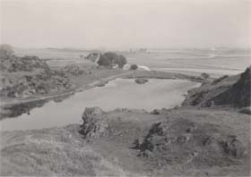

|
|
||||||
|
|
Home | Corson Collection | Biography | Works | Image Collection | Recent Publications | Portraits | Correspondence | Forthcoming Events | Links | E-Texts | Contact Sandyknowe and Early ChildhoodIn 1773 the infant Scott was sent to Sandyknowe Farm in the hope that fresh air and exercise would mend his delicate health. Located 30 miles southeast of Edinburgh in Roxburghshire, Sandyknowe belonged to Walter Scott's grandparents Robert and Barbara Scott. Scott's constant companion was his Aunt Janet (Jenny) who would read to him on days when he was unable to venture outside due to his illness. A particular favourite was Allan Ramsay's Tea-Table Miscellany, and Scott's lifelong love of ballads had its origins in his Aunt's recitations from this collection. His grandmother too would entertain him with tales of Border warfare between the Scots and the English and stories of his own family's struggles during the civil and religious turmoil of 17th- and 18th-century Scotland.
Aunt Jenny not only told Scott stories but also taught him how to read. Although he was at first reluctant, his Aunt's persistence paid off, and Scott soon became a very competent and enthusiastic reader. In January 1775 his grandfather died, and Scott returned to Edinburgh. His stay in the Borders had improved his health, and he was now able to walk with the aid of a small staff.
Although Scott had continued to grow stronger in
Bath, there had been no improvement in his leg. In winter 1776,
then, he was again consigned to Sandyknowe, where his grandmother
was now running the farm with the help of her son Thomas. Scott
spent the long winter months reading the books he found on the farm,
growing particularly fond of Josephus's Wars of the Jews.
A further unsuccessful water cure was attempted at Prestonpans in
summer 1777 until, after a final winter at Sandyknowe, his father
was persuaded that Scott's lameness was irremediable but his health
sufficiently strong to permit him to begin school
in Edinburgh. In addition to building his strength, Scott's residence
at Sandyknowe had provided him with a firm grounding in storytelling
and ancient oral Border traditions, which he would later employ
in his fiction. Last updated: 24-Oct-2003
|
|||||